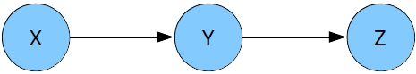
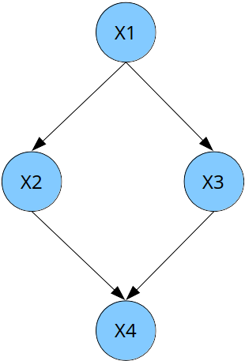

Rappels de probabilité et introduction aux réseaux bayésiens
Table des matières
Questions de cours
Soit \(X_{1}, \ldots, X_{n}\) une suite de variables aléatoires (v.a.). En supposant que la loi jointe de la suite de v.a. \(X_{1}, \ldots, X_{n}\) soit représentée par le réseau bayésien (RB) :
\begin{equation*} X_{1} \to X_{2} \to \dots \to X_{n-1} \to X_{n}, \end{equation*}la relation \(P(X_{1},\ldots,X_{n}) = P(X_{1}) \prod_{i=2}^{n} P(X_{i}|X_{i-1})\) est elle correcte ?
- La complexité d'un réseau bayésien dépend-elle du nombre de liens entre les variables ?
- Soit le réseau bayésien \(X \rightarrow Y \leftarrow Z\). Montrer que les v.a. \(X\) et \(Z\) sont indépendantes.
Correction
Oui. D'après les relations de dépendance décrivant le RB, la variable \(X_{1}\) n'a pas de variable parente, sa loi est donc déterminée par \(P(X_{1})\). Chaque variable \(X_{i}\), \(i \ge 2\), est caractérisée par la loi conditionnelle \(P(X_{i}|X_{i-1})\). Sous ces hypothèses de dépendance, la factorisation de la loi jointe des variables \(X_{1}, \ldots, X_{n}\) s'écrit :
\begin{equation*} P(X_{1},\ldots,X_{n}) = P(X_{1}) \times P(X_{2}|X_{1}) \times \cdots \times P(X_{n}|X_{n-1}). \end{equation*}Il est à noter que ce réseau bayésien permet de représenter une chaîne de Markov.
- Oui, plus les variables sont connectées entre elles, plus les lois conditionnelles des variables dans le RB nécessiteront un grand nombre de paramètres à définir, et donc des complexités spatiales importantes.
Dans ce RB, la factorisation de la loi jointe des variables \(X, Y, Z\) s'écrit :
\begin{equation*} P(X, Y, Z) = P(X) \times P(Y|X,Z) \times P(Z). \end{equation*}Les v.a. \(X\) et \(Z\) sont indépendantes si et seulement si \(P(X,Z) = P(X) \times P(Z)\). En éliminant la variable Y par marginalisation sur les v.a. \(X\) et \(Z\) (i.e. en sommant sur la v.a. \(Y\), on a :
\begin{equation*} P(X, Z) = \sum_{Y} P(X, Y, Z). \end{equation*}En utilisant la factorisation de la loi jointe dans ce RB, nous obtenons :
\begin{equation*} P(X, Z) = \sum_{Y} P(X) \times P(Y|X,Z) \times P(Z). \end{equation*}Par distributivité de l'addition sur la multiplication, nous avons :
\begin{equation*} P(X, Z) = P(X) \times P(Z) \times \sum_{Y} P(Y|X,Z). \end{equation*}Or, par définition d'une loi de probabilité conditionnelle \(\sum_{y} P(Y=y|X=x,Z=z) = 1\), pour toutes valeurs \(x\) et \(z\). Le terme \(\sum_{Y} P(Y|X,Z)\) disparaît donc dans le produit précédent et nous obtenons le résultat attendu :
\begin{equation*} P(X, Z) = P(X) \times P(Z). \end{equation*}Sous les hypothèses du RB \(X \rightarrow Y \leftarrow Z\), \(X\) et \(Z\) sont indépendantes.
Exercice 1
Dans cet exercice, nous utiliserons la représentation graphique du réseau bayésien (RB) présentée en Figure 1

Figure 1 : Graphe d'un RB à trois variables.
Les lois de probabilité conditionnelles (LPC) de ce RB sont les suivantes :
\(P(X)\) =
\(x_{1}\) \(x_{2}\) \(1/2\) \(1/2\) \(P(Y|X)\) =
\(X\) \(y_{1}\) \(y_{2}\) \(x_{1}\) \(2/3\) \(1/3\) \(x_{2}\) \(4/5\) \(1/5\) \(P(Z|Y)\) =
\(Y\) \(z_{1}\) \(z_{2}\) \(y_{1}\) \(0\) \(1\) \(y_{2}\) \(1/2\) \(1/2\)
- Écrire l'expression de la loi jointe du modèle.
- Calculer tous les paramètres de la loi jointe naturelle du modèle.
- Que peut-on dire sur la relation d'indépendance \(X \perp\!\!\!\perp Z \mid Y\) ?
Correction
La loi jointe des v.a. \(X, Y, Z\) dans le RB de la Figure 1 est :
\begin{equation*} P(X, Y, Z) = P(X) P(Y|X) P(Z|Y). \end{equation*}Calculer les paramètres de la loi jointe consiste à calculer les probabilités \(P(X = x, Y = y, Z = z)\) pour tous \(x \in \{x_{1}, x_{2}\}\), \(y \in \{y_{1}, y_{2}\}\), \(z \in \{z_{1}, z_{2}\}\). Dans ce cas, la loi jointe est caractérisée par huit probabilités et peut se mettre sous la forme de la table suivante :
\(X\) \(Y\) \(Z\) \(P(X, Y, Z)\) \(x_{1}\) \(y_{1}\) \(z_{1}\) \(P(X = x_{1}) \times P(Y=y_{1} \vert X=x_{1}) \times P(Z=z_{1} \vert Y=y_{1}) = 1/2 \times 2/3 \times 0 = 0\) \(x_{2}\) \(y_{1}\) \(z_{1}\) \(P(X = x_{2}) \times P(Y=y_{1} \vert X=x_{1}) \times P(Z=z_{1} \vert Y=y_{1}) = 1/2 \times 2/3 \times 0 = 0\) \(x_{1}\) \(y_{2}\) \(z_{1}\) \(P(X = x_{1}) \times P(Y=y_{2} \vert X=x_{1}) \times P(Z=z_{1} \vert Y=y_{2}) = 1/2 \times 1/3 \times 1/2 = 1/12\) \(x_{2}\) \(y_{2}\) \(z_{1}\) \(1/2 \times 1/5 \times 1/2 = 1/20\) \(x_{1}\) \(y_{1}\) \(z_{2}\) \(1/2 \times 2/3 \times 1 = 1/3\) \(x_{2}\) \(y_{1}\) \(z_{2}\) \(1/2 \times 4/5 \times 1 = 2/5\) \(x_{1}\) \(y_{2}\) \(z_{2}\) \(1/2 \times 1/3 \times 1/2 = 1/12\) \(x_{2}\) \(y_{2}\) \(z_{2}\) \(1/2 \times 1/5 \times 1/2 = 1/20\) Sans surprise, nous avons bien une loi de probabilité puisque :
\begin{equation*} \sum_{x \in \{x_{1}, x_{2}\}, y \in \{y_{1}, y_{2}\}, z \in \{z_{1}, z_{2}\}} P(X=x, Y=y, Z=z) = 1, \end{equation*}avec \(P(X=x, Y=y, Z=z) \in [0,1]\), pour tous \(x \in \{x_{1}, x_{2}\}\), \(y \in \{y_{1}, y_{2}\}\), \(z \in \{z_{1}, z_{2}\}\).
Dans ce RB, la factorisation de la loi jointe des variables \(X, Y, Z\) s'écrit :
\begin{equation*} P(X, Y, Z) = P(X) \times P(Y|X) \times P(Z|Y). \end{equation*}Les v.a. \(X\) et \(Z\) sont indépendantes conditionnellement à \(Y\) si et seulement si \(P(X,Z|Y) = P(X|Y) \times P(Z|Y)\). Par définition,
\begin{equation*} P(X, Z | Y) = \frac{P(X, Y, Z)}{P(Y)}. \end{equation*}En utilisant la factorisation de la loi jointe dans ce RB, nous obtenons :
\begin{equation*} P(X, Z | Y) = P(X) \times P(Y|X) \times P(Z|Y) \times \frac{1}{P(Y)} \end{equation*}En remarquant que \(P(X) \times P(Y|X) = P(X,Y)\) par définition, il vient :
\begin{equation*} P(X, Z | Y) = \frac{P(X, Y)}{P(Y)} \times P(Z|Y) \end{equation*}D'où \(P(X,Z|Y) = P(X|Y) \times P(Z|Y)\) et donc \(X \perp\!\!\!\perp Z \mid Y\).
Exercice 2
Dans cet exercice, nous utiliserons la représentation graphique du RB présentée en Figure 2. Toutes les v.a. du modèle sont supposées binaires.

Figure 2 : Graphe d'un RB à quatre variables.
- Écrire l'expression de la loi jointe du modèle.
- Donner le nombre de paramètres pour définir la loi jointe représentée par le RB.
- Même question sans utiliser la factorisation de la loi jointe associée au RB.
- Reprendre les questions 2 et 3 en calculant le nombre de paramètres probabilistes nécessaire à la définition de la loi jointe factorisée dans le RB et de la loi jointe naturelle des variables.
- Déterminer si les relations d'indépendances suivantes sont vraies ou fausses :
- \(X_{1} \perp\!\!\!\perp X_{4} \mid X_{2}, X_{3}\) ;
- \(X_{2} \perp\!\!\!\perp X_{3} \mid X_{1}\) ;
- \(X_{2} \perp\!\!\!\perp X_{3} \mid X_{1}, X_{4}\).
Correction
La loi jointe des v.a. \(X_{1}, X_{2}, X_{3}, X_{4}\) dans le RB de la Figure 2 est :
\begin{equation*} P(X_{1}, X_{2}, X_{3}, X_{4}) = P(X_{1}) P(X_{2}|X_{1}) P(X_{3}|X_{1}) P(X_{4}|X_{2},X_{3}). \end{equation*}La complexité spatiale du RB correspond à la somme des complexités spatiales des LPC de chaque variable :
\begin{equation*} CS(RB) = CS(P(X_{1})) + CS(P(X_{2}|X_{1})) + CS(P(X_{3}|X_{1})) + CS(P(X_{4}|X_{2}, X_{3})) \end{equation*}Les v.a. \(X_{1}, X_{2}, X_{3}, X_{4}\) étant binaires, nous obtenons :
- \(CS(P(X_{1})) = 2\) ;
- \(CS(P(X_{2}|X_{1})) = 4\) ;
- \(CS(P(X_{3}|X_{1})) = 4\) ;
- \(CS(P(X_{4}|X_{2}, X_{3})) = 8\).
D'où \(CS(RB) = 18\).
- La complexité spatiale de la loi jointe non factorisée (ou loi jointe naturelle) des v.a. \(X_{1}, X_{2}, X_{3}, X_{4}\) est \(CS(LJN) = 2^{4} = 16\)
Dans le cas du RB, la complexité probabiliste,notée CP correspondant au nombre de paramètres probabilistes nécessaires pour définir le modèle, est :
- \(CP(P(X_{1})) = 1\) ;
- \(CP(P(X_{2}|X_{1})) = 2\) ;
- \(CP(P(X_{3}|X_{1})) = 2\) ;
- \(CP(P(X_{4}|X_{2}, X_{3})) = 4\).
D'où \(CP(RB) = 9\). Pour la loi jointe naturelle des v.a., \(CP(LJN) = 16 - 1 = 15\).
La technique générale pour répondre aux questions d'indépendance conditionnelle est la suivante :
- Écrire la définition probabiliste de la relation d'indépendance à vérifier.
- À partir de l'expression de la factorisation de la loi jointe, éliminer les variables qui n'interviennent pas dans la relation d'indépendance à vérifier en effectuant une marginalisation.
- Diviser par la loi des variables de conditionnement.
Par exemple, démontrer \(X_{1} \perp\!\!\!\perp X_{4} \mid X_{2}, X_{3}\) revient à montrer que \(P(X_{1}, X_{4}|X_{2}, X_{3}) = P(X_{1}|X_{2}, X_{3}) P(X_{4}|X_{2}, X_{3})\).
On part donc de la factorisation du RB : \[ P(X_{1}, X_{2}, X_{3}, X_{4}) = P(X_{1}) P(X_{2}|X_{1}) P(X_{3}|X_{1}) P(X_{4}|X_{2},X_{3}). \] On divise par \(P(X_{2}, X_{3})\) à gauche et à droite de l'expression précédente : \[ \frac{P(X_{1}, X_{2}, X_{3}, X_{4})}{P(X_{2}, X_{3})} = P(X_{1}) P(X_{2}|X_{1}) P(X_{3}|X_{1}) P(X_{4}|X_{2},X_{3}) \frac{1}{P(X_{2}, X_{3})}. \] On remarque également : \[ \sum_{X_{4}} P(X_{1}, X_{2}, X_{3}, X_{4}) = P(X_{1}) P(X_{2}|X_{1}) P(X_{3}|X_{1}) = P(X_{1}, X_{2}, X_{3}) \underbrace{\sum_{X_{4}} P(X_{4}|X_{2},X_{3})}_{\text{vecteur de 1}} \] On obtient donc : \[ P(X_{1}, X_{2} | X_{3}, X_{4}) = \frac{P(X_{1}, X_{2}, X_{3})}{P(X_{2}, X_{3})} P(X_{4}|X_{2},X_{3}), \] Puis le résultat : \[ P(X_{1}, X_{2} | X_{3}, X_{4}) = P(X_{1} | X_{2}, X_{3}) P(X_{4}|X_{2},X_{3}). \]